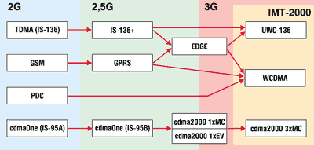
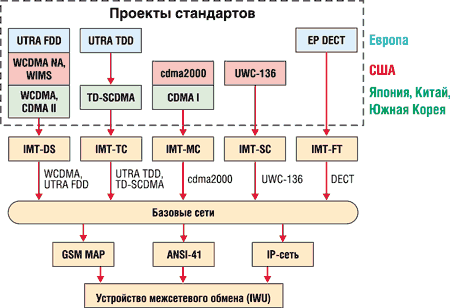
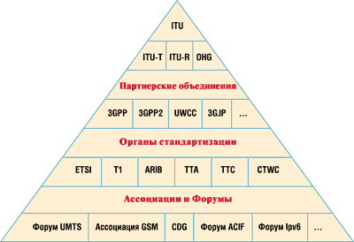
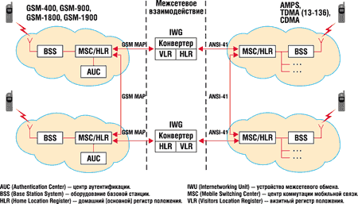

Галина Большова, Леонид Невдяев
Проект всемирной мобильной связи, сегодня известный под названием IMT-2000, - это долгосрочная программа разработки, стандартизации и содействия внедрению национальных, региональных и международных систем, реализующих полный набор услуг в интересах наземной (сотовой и беспроводной) и спутниковой связи.
В конце 80-х, когда основы IMT-2000 только закладывались, в мире уже существовало множество разрозненных сетей мобильной связи, однако все они были аналоговыми. Разнообразие используемых в них стандартов и технологий на фоне общей тенденции многих стран к экономической интеграции требовало создания единого стандарта, способного обеспечить абонентам свободу перемещения и возможность обслуживания их в любой сети вне зависимости от места ее развертывания. Поэтому ключевыми требованиями, предъявляемыми Международным союзом электросвязи (ITU) к всемирному стандарту IMT-2000, стали: высокая степень преемственности оборудования наземных и спутниковых систем в пределах всего земного шара; возможность конвергенции услуг типа "мобильный - мобильный" (для разных мобильных сетей) и "мобильный - стационарный" (при связи с абонентами ТфОП), а также обеспечение услуг мультимедиа в рамках глобальной информационной инфраструктуры. Этот стандарт, который по своим характеристикам должен относиться к стандартам третьего поколения - 3 Generation (3G), позволил бы предоставлять услуги с помощью одного портативного терминала с хорошими эксплуатационными характеристиками (минимальное потребление, приемлемое качество связи) и высоким уровнем безопасности. Предполагается, что стоимость такого терминала при массовом производстве должна быть достаточно низкой.
Всемирный стандарт: миф или реальность
С точки зрения системы единый международный стандарт означает многофункциональный радиоинтерфейс и широкий спектр услуг, варьируемых в зависимости от требований пользователя и сценариев организации связи.
По мере разработки требований к системам нового поколения идеологам концепции IMT-2000 стало ясно, что, несмотря на бурное и повсеместное развитие сотовой связи и беспроводного доступа, а также первые успехи международного роуминга, огромная часть территории, включая мировые океаны, оказывается не охваченной связью. Даже в перспективе наземные сети мобильной связи смогут покрыть не более 20% мировой суши. Следовательно, полное покрытие мирового пространства и обеспечение глобального мобильного доступа к услугам XXI века станет возможным только с привлечением спутниковых систем.
Однако ситуация с выработкой глобального стандарта для спутниковой связи еще более сложна, чем в наземных сетях. К двум несовместимым концепциям систем на базе технологий TDMA и CDMA добавляется еще пять-шесть вариантов построения орбитальных группировок. Использование разных орбит и соответственно разных ретрансляторов (прозрачных или с обработкой на борту), бортовых антенн с разным числом лучей неизбежно приводит к тому, что радиоинтерфейс, разработанный для одной технологии, оказывается неоптимальным для другой.
Тем не менее в течение нескольких лет ITU совместно с рядом региональных организаций по стандартизации предпринимал безуспешные попытки разработать требования к глобальной системе связи. Однако устранить противоречия между представителями разных регионов так и не удалось. Стало очевидным, что их интересы невозможно объединить в рамках единого стандарта, поскольку это неизбежно приведет к коренной переработке существующей инфраструктуры, в которую уже вложены значительные средства. Несмотря на то, что в существующих системах предоставляются одинаковые виды услуг, применяемые в них технологии доступа - CDMA и TDMA -- принципиально различны, и ясных путей для их гармонизации или конвергенции также не просматривается.
Ситуация усугубилась еще и тем, что три наиболее массовые технологии 2G-поколения: GSM, TDMA (D-AMPS) и cdmaOne пошли по эволюционному пути развития, предполагающему увеличение пропускной способности без дополнительного расширения спектра. Это направление развития мобильной связи сейчас известно как поколение 2,5G (рис. 1).
|  |
| Рис. 1. Стратегия перехода сетей мобильной связи к 3-му поколению.
|
Стратегия модернизации оборудования GSM основана на последовательном внедрении технологий HSCSD, GPRS, EDGE и т. д. Развитие сетей на базе TDMA предполагается за счет использования нескольких модификаций стандарта IS-136+ (без расширения полосы канала 30 кГц), IS-136 HS (Outdoor/Vehicular) с шириной полосы канала 200 кГц и IS-136 HS (Indoor Office) с шириной полосы канала 1,6 МГц. В системах на основе cdmaOne 95A планируется внедрение нескольких радиоинтерфейсов: cdmaOne 95B, cdma2000 1xMC и cdma2000 1xEV.
Эволюционное внедрение требует меньших капитальных затрат и снижает инвестиционные риски операторов, позволяя максимально использовать существующую инфраструктуру сети и внедрять новые сетевые элементы в процессе последовательной модернизации, в зависимости от уровня спроса на конкретные виды услуг. Основной лозунг эволюционных технологий - "все модификации имеют право на жизнь". На практике это означает внедрение многостандартной среды радиодоступа.
"Машина" модернизации уже запущена, и, учитывая вложенные в мобильные технологии огромные средства, этот процесс не остановить. А по мере роста числа конкурирующих между собой 2,5G- и 3G-технологий надежды на создание единого стандарта с каждым днем тают. Тем не менее хочется верить, что идеологи мобильной связи сумеют когда-нибудь вернуться к этой проблеме и миф о всемирном стандарте станет реальностью.
Семейство стандартов
Поняв бесплодность своих попыток, направленных на создание всемирного стандарта, эксперты ITU выдвинули концепцию разработки семейства 3G-стандартов. И тогда на рассмотрение ITU поступило 16 проектов, в том числе 10 предложений, касающихся наземной связи, причем от трех крупных регионов мира - Северной Америки, Европы и Азии.
Анализ представленных предложений показал, что в них доминируют принципиально различные между собой региональные и фирменные технологические решения, причем внутри одного региона существуют страны, исповедующие различные подходы к созданию и внедрению систем мобильной связи. В результате дальнейших исследований и обобщений материалов проектов-кандидатов произошла перегруппировка сил и основные разработки сконцентрировались вокруг трех базовых технологий - WCDMA, cdma2000 и UWC-136.
Пожалуй, только Европа сумела выработать единый подход к проблеме стандартизации 3G-технологий. Предложения от Европы в ITU были оформлены в виде двух проектов: UTRA и DECT EP.
Совершенно иной подход был предложен в США, где отказались от единого национального предложения, и в ITU поступили четыре проекта, два из которых фактически подготовлены не институтами по стандартизации, такими, как ANSI или TIA, а промышленными фирмами - Qualcomm и Ericsson (североамериканское отделение). Фактически США предложили три пути развития. Первый из них основан на дальнейшем совершенствовании технологии TDMA/AMPS, получившей широкое развитие не только в США, но и в мире. Второе основано на постепенном наращивании пропускной способности системы cdmaOne и эволюционном переходе от существующей инфраструктуры к технологии cdma2000. Что же касается двух других предложений США: WCDMA NA (T1P1, США) и WIMS (TR-46.1), то они практически полностью совпадают с предложениями от Европы (UTRA) и Японии (WCDMA) и в процессе дальнейшего рассмотрения были объединены в единый проект (рис. 2).
|  |
| Рис. 2. Структура радиоинтерфейсов для IMT-2000.
|
Решающими при определении стратегии развития мобильной связи 3-го поколения в Азиатско-Тихоокеанском регионе стали два фактора: огромный рыночный потенциал и большая численность населения. На этой территории, отнесенной Регламентом радиосвязи к Району 3, активную позицию занимают Япония, Корея, Китай и Малайзия. Их вклад в программу IMT-2000 убедительно характеризует амбиции этих стран стать мировыми лидерами в массовом применении новейших технологий связи. Несмотря на то, что каждая из них имеет свои национальные особенности перехода к 3-му поколению, их общая черта - смещение акцентов в сторону национальных производителей оборудования (ярче всего это проявляется в Японии).
Стандартизация семейства систем 3-го поколения, названного IMT-2000, проводится под эгидой ITU (рис. 3). Работы ведутся в рамках двух секторов ITU-T и ITU-R. Сектор ITU-T отвечает за разработку концептуальных аспектов создания IMT-2000, а сектор ITU-R - за радиоинтерфейс для этих систем.
|  |
| Рис. 3. Пирамида стандартизации в рамках программы IMT-2000.
|
Организации, участвующие в стандартизации в рамках программы IMT-2000
|
Объединение 3GPP
В борьбе за мировые стандарты 3-го поколения образовались два лагеря, оформившихся в виде двух партнерских объединений: 3GPP и 3GPP2. В объединение 3GPP входят такие институты стандартизации, как ETSI (Европа) и ARIB (Япония), которые действуют согласованно, координируя свою техническую политику по отношению к cdma2000. Кроме них, в это объединение входит комитет T1 (США) и три региональных органа стандартизации - CWTS (Китай), TTA (Корея) и TTC (Япония).
Основной вклад партнерства 3GPP в программу IMT-2000 - это разработка спецификации на широкополосную систему IMT-DS (IMT-2000 Direct Spread), в которой за основу взято предложение UTRA FDD (Европа) и WCDMA (Япония). Кроме названных выше, было заявлено еще три проекта WCDMA NA, WIMS (США) и CDMA II (TTA, Южная Корея), в основном не отличающихся от первых двух (UTRA и WCDMA).
Партнерство 3GPP представило в ITU и второй тип радиоинтерфейса - IMT-TC (IMT-2000 Time-Code), основанный на кодово-временном разделении каналов TDMA/CDMA с временным дуплексным разносом (TDD) для применения в непарных полосах частот. Интерфейс представляет собой чисто формальное объединение двух различных технических решений - европейского предложения UTRA TDD и китайского TD-SCDMA.
Третье предложение DECT EP, поступившее от ETSI, обозначается аббревиатурой IMT-FT (IMT-2000 Frequency Time). Стандарт на микросотовую систему DECT разрабатывается с комбинированным частотно-временным дуплексным разносом и предназначен для применения как в парных, так и в непарных полосах частот. В варианте IMT-FT предложены три градации скоростей передачи: R=1,152; 2,304 и 3,456 Мбит/с, что реализуется за счет введения новых методов модуляции p/2-DPSK, p/4-DQPSK и p/8-D8PSK.
Объединение 3GPP2
Во второе партнерское объединение 3GPP2 входит Ассоциация промышленников средств связи TIA (представленная подкомитетами TIA TR-45.3 и TIA TR-45.3), а также ряд азиатских региональных организаций: ARIB, CWTS, TTA и TTC. Основная цель 3GPP2 - эволюционное развитие двух технологий сотовой связи 2-го поколения, которые в настоящее время получили широкое распространение в США - TDMA (IS-136) и cdmaOne (IS-95).
Предложения от этого партнерского объединения представлены в виде двух радиоинтерфейсов: IMT-MC (IMT-2000 Multi Carrier) - стандарт на многочастотную систему cdma2000 с одновременной передачей нескольких несущих и частотным дуплексным разносом для применения в непарных полосах частот и IMT-SC (IMT-2000 Single Carrier) - стандарт на одночастотную систему TDMA (предложение UWC-136) для применения в парных полосах частот (таблица).
Характеристики радиоинтерфейсов для IMT-2000
| Технология | IMT-DS | IMT-MC | IMT-TC | IMT-SC | IMT-FT |
| Орган стандартизации | 3GPP, ARIB, ETSI | 3GPP2, TIATR-45.3 | 3GPP, ETSI, CWTS | 3GPP2, UWCC, TIA TR-45.3 | ETSI |
| Базовая технология | WCDMA, UTRA FDD | Cdma2000 | UTRA TDD, TD-SCDMA | UWC-136 | DECT EP |
| Метод доступа | DS-CDMA | MC-CDMA | TDMA/CDMA | TDMA | FDMA/TDMA |
| Дуплексный разнос | FDD | FDD | TDD | FDD | FDD/TDD |
| Скорость передачи, кбит/c | 384; 2048 | 384; 2048 | 384; 2048 | 384; 2048 | 1152; 2304; 3456 |
| Чиповая скорость, Мчип/с | 3,84 | 3,6884 | 3.84 (UTRA), 1,1136 (SCDMA) | - | - |
| Вид модуляции | QPSK/BPSK, HPSK | QPSK/BPSK | QPSK/BPSK, HPSK | BOQAM, QOQAM | GFSK, (/2-DPSK, (/4-DQPSK, (/8-D8PSK |
| Длительность кадра, мс | 10 | 5 и 20 | 10 | 4,6 | 10 |
Межсетевое взаимодействие
Архитектура 3G-систем включает транспортную (базовую) сеть и средства радиодоступа, модернизация которых осуществляется различными путями. Эффективность сетей радиодоступа в значительной степени зависит от используемых в них технологий. Смена поколений, как правило, означает и смену идеологии построения этих систем.
Подход же к выбору базовой сети совершенно иной и в основном определяется стратегией развертывания систем нового поколения. Можно сказать, что такие сети более инерционны, поскольку в них делались значительные инвестиции, которые операторы желают сохранить при переходе к 3G-поколению. Однако, в отличие от радиосетей, существующие базовые сети не выступают как сдерживающий фактор для внедрения новых 3G-услуг.
Новые технологии радиодоступа, разрабатываемые в рамках IMT-2000, должны обеспечивать равные возможности адаптации для любой из трех доминирующих в настоящее время базовых сетей: усовершенствованной опорной сети GSM MAP североамериканской сети ANSI-41 и IP-сети. Чтобы реализовать это требование на практике, необходимо разработать единый межсетевой интерфейс NNI (Network-to-Network Interface), который в совокупности со стандартным модулем идентификации пользователя UIM (User Identity Module) будет обеспечивать роуминг независимо от того, какой метод радиодоступа используется в географическом регионе.
Важная задача базовых сетей на сегодняшнем этапе - достижение требуемой степени межсетевого взаимодействия и "прозрачности", необходимых для поддержки глобального роуминга. Принципы межсетевого взаимодействия между системами GSM и TDMA через каналы магистральных сетей GSM MAP и ANSI-41 поясняет рис. 4. Независимо от того, какая из сетей - GSM или TDMA является домашней для абонента, для перехода из одной сети в другую обязательно потребуется конвертер или шлюз IWG (Interwoking Gateway), с помощью которого будет реализован роуминг.
|  |
| Рис. 4. Межсетевое взаимодействие между сетями GSM и TDMA.
|
AUC (Authentication Center) - центр аутентификации; BSS (Base Station System) - оборудование базовой станции; HLR (Home Location Register) - домашний (основной) регистр положения; IWU (Internetworking Unit) - устройство межсетевого обмена; MSC (Mobile Switching Center) - центр коммутации мобильной связи; VLR (Visitors Location Register) - визитный регистр положения.
Ключевой момент в организации взаимодействия между системами GSM и TDMA - использование единого протокола сигнализации SS7. Что же касается базовых сетей GSM MAP и ANSI-41, то в них по-прежнему будут действовать свои протоколы сигнализации. Например, если TDMA - это домашняя сеть, а GSM - визитная, то потребуется преобразование протоколов для обмена между регистром перемещений GSM VLR и регистром начального размещения домашней сети HLR. Если же абонент TDMA будет взаимодействовать через сеть GSM, шлюз IWG будет сохранять информацию в HLR, что и обеспечит роуминг.
Несколько иным будет алгоритм роуминга, если GSM - домашняя сеть, а TDMA - визитная. Дело в том, что в архитектуре GSM-сети предусмотрено выделение центра аутентификации AUC как физически отдельного устройства, независимо от его конкретного размещения в сети (в том числе и при совмещении его с коммутатором). Для сетей TDMA такое решение не применяется. Чтобы преодолеть эти различия в архитектуре, в состав IWG должен быть введен так называемый псевдо-AUC, включаемый на стороне ANSI-41.
Существует еще одна проблема, связанная с переадресацией вызова. Если вызываемый абонент занят, недоступен или не отвечает, то входящий вызов перенаправляется на другой номер. Этот процесс в сетях GSM проходит под управлением коммутатора MSC и "домашней" регистрационной базы HLR, т. е. центра коммутации, который для абонента является "своим". В отличие от GSM, в сети ANSI-41 предусмотрено применение шлюзового коммутатора MSC, который маршрутизирует все вызовы из GSM в TDMA.
Основные трудности сопряжения системы на базе GSM с сетью UMTS или стандарта IMT-2000 связаны с различием их архитектур. Современная сеть GSM вертикально интегрирована и полнофункциональна на каждом уровне системы - от обслуживания пользователя до транспортного соединения.
Будущие сети UMTS создаются как интегрированные горизонтально с четкой границей между IP-приложениями, коммуникационными элементами и транспортными уровнями. При реализации UMTS-сети исчезнет характерная для GSM зависимость инфраструктуры от специализированных коммутаторов MSC, что даст возможность намного быстрее внедрять мощные приложения, способные одинаково хорошо функционировать в любой сети в любой стране и, что особенно важно, при организации глобального роуминга.
Проблемы же переходного периода можно решить, введя общую транспортную среду для всех видов трафика. Для этой цели можно использовать универсальный коммутатор UMSC (UMTS MSC), который будет обеспечивать как передачу трафика сетей GSM, так и пакетную передачу информации (режим, свойственный сетям, основанным на IP-протоколе - GPRS, EDGE, WCDMA).